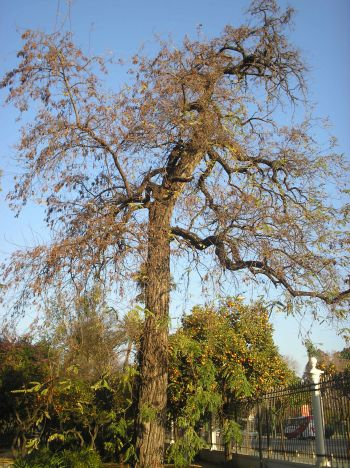
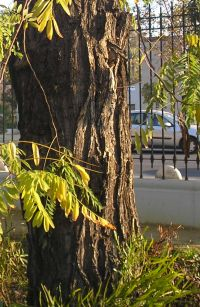
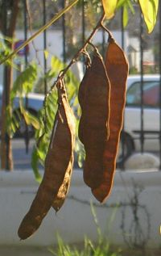

|
Robinia pseudoacacia L. Species Plantarum
722 (1753) R. boyntonii Ashe, R.
hispida L.
|
Leguminosas |
| Falsa acacia, pan y quesitos, robinia |
Árbol caducifolio |
|
Árbol caducifolio, robusto, copa ancha, de hasta 25 m
de altura; raíz gruesa con ramificaciones largas; tronco rugoso,
fisurado, de color marrón grisaceo; ramas fuertes y algo
tortuosas, las más jóvenes espinosas. Hojas alternas, imparipinnadas, de 20 cm, con peciolo articulado en la base, 10 pares de foliolos y uno en el ápice; foliolos de 6 x 2 cm, elípticos u ovados, enteros, de color verde intenso en el haz y más pálido por el envés, glabros. Flores (1) hermafroditas, papilionadas, de color blanco, agrupadas en racimos multifloros, axilares y colgantes de 10-20 cm; cáliz de 4-7,5 (9) mm brevemente acampanados; corola de 15-20 mm; 10 estambres desiguales, 9 de ellos soldados en un tubo por los filamentos y uno total o parcialmente libre (diadelfo); ovario sobre un pie de 2-3 mm, alargado y peloso en el estigma Fruto legumbre, de 10 x 1,5 cm alargado, fuertemente comprimido, con sutura dorsal,glabro, de color pardo rojizo; con 8-9 semillas de 4-5 mm, arriñonadas, lisas, de color pardo. |
 Fotos: Cynthia Alías, 2007 |
|   |
Observaciones:
Recibió
el nombre de Robinia dedicado
a su introductor en Europa
Jean Robin, jardinero de Enrique IV.
En Sevilla se utilizó en el ajardinado de muchos barrios en la primera mirad del siglo XX, pero las gotas de melaza que destilan sus ramas jóvenes ensucian los coches. Actualmente se utilizan otras "falsas acacias" que no tienen ese inconveniente, por ejemplo Sophora japonica o Tipuana speciosa, de porte y hojas similares. Enriquece el suelo en nitrogeno por su simbiosis con bacterias fijadoras. |
| Área de origen.- Originario del Este y Centro de EEUU. Introducido en Europa en el siglo XVII: en 1601 se introdujo la semilla desde Canadá y en 1624 se colocó el primer plantón en el Jardín de las Plantas de París. | |
|
Uso en el
campus: Hay dos ejemplares, uno en el Citius y otro en la
Escuela
de Ingenieria Informática (Parking Sureste). |
Localización:
Citius
E.T.S. Ingeniería Informática: Parking Sureste |
|
(1) López Gonzalez,G. (1982) Guia de Incafo de los árboles y arbustos de la Península Ibérica y Baleares. |
|
| Cynthia Alías Villegas & Carlos Romero Zarco,
2008 |
|